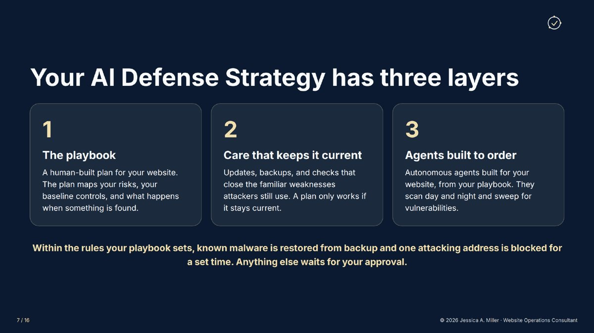
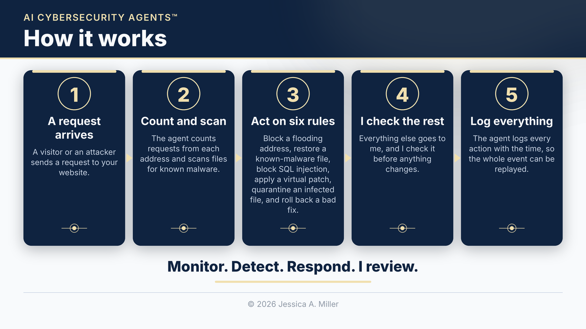
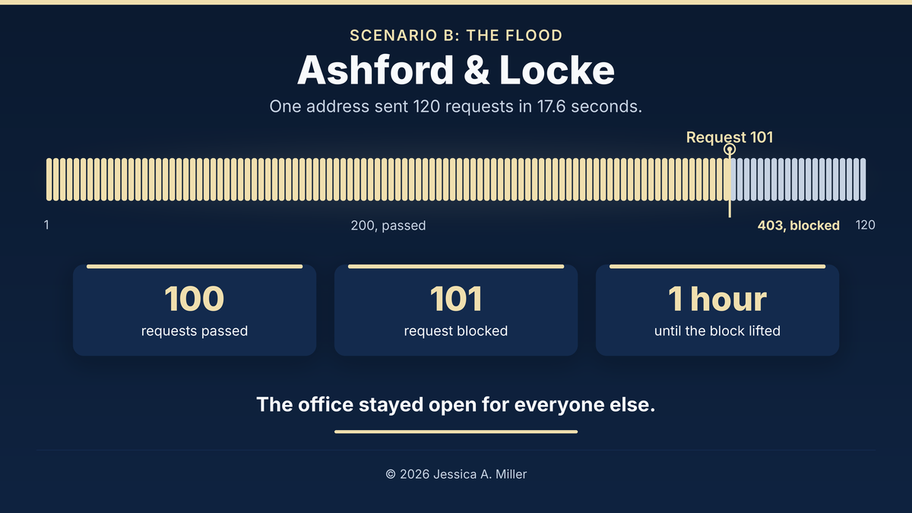
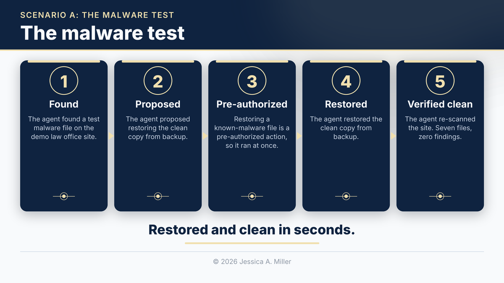
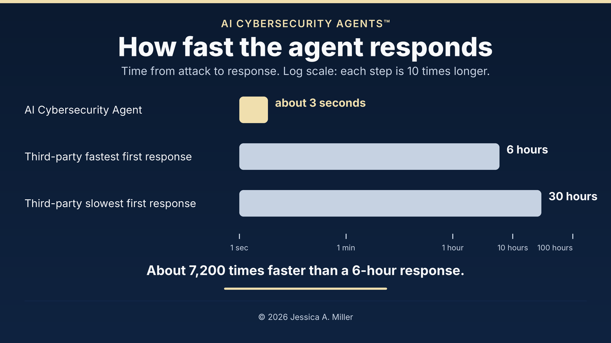
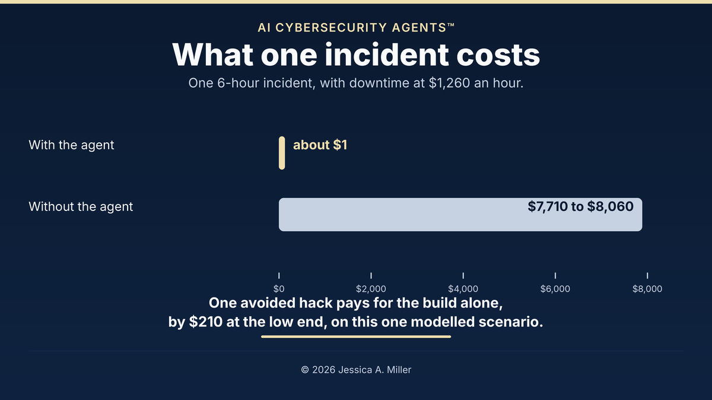

AI Cybersecurity Agents™: Build Demonstration
Build demonstration. This page shows how I design and build an AI Cybersecurity Agent for a website.
See the executive presentation (PDF)
Project Overview
Product: AI Cybersecurity Agents™, a strategy for your business, shaped to one website at a time. Role: designer and builder. Approach: defense in layers, with a person in charge. Status: built to order, proven on my own sites first, before an agent protects a client site.
The Problem
Attackers now use AI agents to break into websites. In October 2026, researchers documented autonomous AI agents probing more than 1,200 company websites and reaching sites belonging to more than 100 companies. The weaknesses they used were familiar ones: SQL injection, unsafe file uploads, authentication bypass, and outdated framework code. What changed is the cost. Researchers put the average cost at about $5 per attempt, and about $50 per successful intrusion, and about one in ten attempts succeeded, with an average of about 23 hours to a successful break-in. At that price, every website is worth trying, including a small business website.
Phishing changed fastest. AI-generated phishing surged from 4 percent to 56 percent of detected attacks in a single month at the end of 2025, a 14-fold surge. IBM found that one in four malicious breaches in its 2026 study was AI-enabled, up 56 percent in a year, and AI-enabled breaches averaged about $6 million, against a global average of $4.99 million.
US cybersecurity revenue was $86 billion in 2025. Most businesses do not know they need this until they are hacked. A compromised site loses trust, sales, and search visibility.
The Design: Four Jobs
The agent does four jobs, inside rules the client approves.
- Predict: the agent knows the site's risks before anything happens, checking every plugin, theme, and core version daily, and watching for the early signs of an attack.
- Intercept: the agent sits in front of the site and inspects each request before it reaches the website.
- Block: the agent stops the attack, or challenges it, and the firewall stands in as a virtual patch until the real fix lands.
- Clean up damage: the agent quarantines the infected file, restores the clean copy from backup, and reports everything it did. A restore does not close the entry point that let the file in.
The agent logs every attack attempt, and I review the log and update the playbook. A brand-new variant is flagged to a named human, never fixed silently.
The Build: Defense in Layers
Your AI Defense Strategy answers with defense in layers, with a person in charge. The strategy has three layers: the playbook, care that keeps the site current, and an AI Cybersecurity Agent strategy for your business.

First, the Website Security Playbook, from $750: I audit the website, rank the real risks, and write a custom security plan. The playbook is a written plan, not hands-on work on the site. Second, a care plan, $150 or $300 a month: updates, backups, and monitoring kept current, so the weaknesses the agents look for are closed. Third, an AI Cybersecurity Agent strategy for your business, from $7,500, plus $200 a month per agent for the add-on: agentic AI agents built to order to monitor, detect, and respond, inside rules you approve. I oversee each agent myself, including updates and fixes.
The build runs in four steps. First, I assess the website: its code, its access, and its current protections. Second, I write the playbook: the plan, the controls, and the rules the agent will follow. Third, I build the agent from the playbook and test it against the site, its code, and real attack patterns. Fourth, I oversee and improve the agent: it will monitor, detect, and respond inside the rules the playbook sets, and I keep the playbook current as the site and the threats change.
The agent is designed to run on Cloudflare at the edge, where a Worker orchestrates the defense, with an origin-side component that scans files and restores clean copies from backup. AI attacks are automated. Your defense is not left to automation alone. The playbook pre-authorizes exactly seven actions: restoring a known-malware file from backup, blocking one attacking address for a set time, blocking a request that matches a SQL injection pattern, applying a virtual patch, quarantining an infected file and restoring the clean copy, rolling back its own change if it broke the site, and learning a new attack pattern and blocking it. Everything else waits for my check before it goes live. I oversee each agent myself.
What the Playbook Allows
The playbook pre-authorizes exactly seven actions. First, restore a known-malware file from backup. Second, block one attacking address for a set time: more than 100 requests in 60 seconds, or 50 for a repeat offender, blocked for one hour. Third, block a request that matches a SQL injection pattern, and block the address for one hour after three such attempts in 60 seconds. Fourth, apply a virtual patch: block a request that matches a known exploit pattern until the real fix lands. Fifth, quarantine an infected file and restore the clean copy, for known malware only. Sixth, roll back its own change if it broke the site: after a fix, the agent checks that the site still works, and if its own change broke it, it rolls that change back at once and reports it. Seventh, learn a new attack pattern and block it: the first time it sees a new pattern, the agent creates a virtual patch rule for it on its own, logs it, and emails me at once. The rule blocks exactly that pattern, never a whole path, never by address alone, and never a file in the clean baseline. I review it after, and I can remove it or keep it. Everything else waits for a named human's approval. The agent never changes anything beyond the seven pre-authorized actions on its own.
A super dome for your website. Autonomous defense that watches for incoming attacks day and night, recognizes a new pattern, and blocks it on its own. I review everything it does.
Nothing else at small business price creates a block rule from your own site's repeated patterns. Cloudflare does the concept at enterprise scale, for bots. Nobody does it per site, deterministically, for $200 a month. Each rule is visible to me. I can remove it. I review it after.
Built for a small business website. Designed to scale, with no cap on the files or pages it watches.
Live Demo
The AI Cybersecurity Agent watches your website. The agent counts requests from each address and scans site files for known malware. It scans every page on your site. There is no page cap and no tiered scanning. When one address floods the site, the agent blocks it. When a file matches a known malware signature, the agent quarantines it and restores the clean copy from backup. When a request matches a SQL injection pattern, the agent blocks that request, and blocks the address after three such attempts. When a request matches a known exploit pattern, the agent blocks it as a virtual patch until the real fix lands. After a fix, the agent checks that the site still works, and rolls its own change back at once if it broke the site. Those are the only seven things the agent does on its own. Everything else goes to me, and I check it before anything changes.
Third parties sell the same service to everyone and respond in 6 to 30 hours. My AI Cybersecurity Agent is designed for your business alone. It is your strategy. It monitors your site day and night, blocks attacks as they happen, scans every page with no tier and no page limit, and restores a hacked file in about 3 seconds. One avoided six-hour incident, on this model, covers the $7,500 build alone, by $210 at the low end. It does not cover the full first-year cost of $9,900. That is a strategy that works.

Ashford & Locke is a fictional test law office, built to show the agent at work. In the latest test, one address sent 120 requests in 17.6 seconds. The agent let the first 100 through and blocked that address at request 101. The office stayed open for everyone else. The block lifted after one hour. In an earlier test, the agent found a test malware file, restored the clean copy, and confirmed the site was clean in about 3 seconds.

Try it yourself. Visit the live demo and press "Test the agent." The page sends requests the way an attacker would, and the count runs live. After 100 requests in one minute, it blocks your address for one hour. The office stays open for everyone else.
Monitor. Detect. Respond. I review.
Read the full test records: Demo Report: Scenario A, Malware Restore and Demo Report: Scenario B, Attacking Address Blocked.
Watch the Agent at Work
Watch the agent at work in this short video: how it monitors a site day and night, blocks an attack as it happens, and restores a hacked file, inside rules you approve.
The Malware Test
In an earlier test, the agent found a test malware file on the demo law office site. The agent applied the restore at once under the playbook rule that pre-authorizes it. The agent restored the file and confirmed the site was clean in about 3 seconds.

How Fast, and What It Costs


I am plain about what the agent does not do. The agent does not stop the first requests from coming through. In the flood test, the first 100 requests passed before the block landed at request 101. A brand-new attack variant goes to me for review instead of being blocked on its own. What the agent does is shrink the time an attack can do damage, from hours to about 3 seconds, and keep the site open for everyone else while it does.
Download the evidence brief (PDF, 7 pages): the full numbers behind this page, the vendor response-time comparison, the ticket queue and database restore times, and what the agent can and cannot do, with sources.
Download Agent Protection by the Numbers (PDF, 10 pages): the full numbers page as a printable PDF, including attack reporting, severity levels, the ticket queue, liability, and what the agent can and cannot claim, with sources.
Why You Need It
Attackers do not keep office hours. A person cannot watch a website all day and all night. The agent watches, acts fast on the seven clear-cut actions, and brings everything else to me. Your site stays up while the attack is stopped.
What Else the Agent Can Do
- Predict: check every plugin, theme, and core version daily, and flag a vulnerable component before it is attacked.
- Scan site files every hour on a schedule, day and night, for known malware.
- Count requests from each address and spot a flood.
- Block one attacking address for a set time.
- Apply a virtual patch: block a request that matches a known exploit pattern until the real fix lands.
- Scan site files for known malware, quarantine the infected file, and restore the clean copy from backup.
- Flag a brand-new variant for my check, never fix it silently: a file that changed unexpectedly, or a new file that appeared.
- Log every action with the time, so the whole event can be replayed.
- Email me when the agent acts or flags something.
- Send a daily report of what the agent did and found.
- Flag anything outside those seven actions for my check.
- Nothing changes on your site without my approval, except the seven actions above.
What the Client Gets
- An AI Cybersecurity Agent strategy for your business, shaped to one website, from its playbook, tested against that site before it goes live.
- A custom build from $7,500 per site. I offer payment plans spread out over the duration of the project and paid monthly, not half up front and half later, so this technology is accessible to small business owners and mid-size companies.
- The security agent add-on at $200 a month per agent, on a care plan. I oversee each agent myself, including updates and fixes.
- A care plan at $150 or $300 a month that keeps updates, backups, and monitoring current, so the weaknesses the agents look for stay closed.
- A written record of what the agent did and why, for every action it takes.
See AI Cybersecurity Agents™ pricing and Website Cybersecurity and Incident Response.
Sources
- NorForge, "Inside Cairn," October 19, 2026: AI agents probed more than 1,200 company websites and reached sites belonging to more than 100 companies.
- Reuters, October 19, 2026: about $5 per attempt, and about $50 per successful intrusion.
- IBM and Ponemon Institute, Cost of a Data Breach Report 2026: one in four malicious breaches was AI-enabled, up 56 percent in a year.
- Hoxhunt, Phishing Trends Report 2026: AI-generated phishing surged from 4 percent to 56 percent of detected attacks in a single month.
- Statista Market Insights, April 24, 2026: US cybersecurity revenue was $86 billion in 2025.